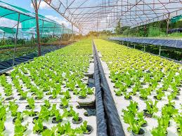
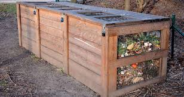
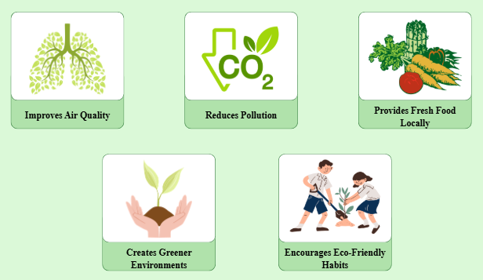

Learn smart and sustainable ways to grow crops in urban areas for a greener and healthier community.

Rooftop farming is the practice of growing crops on the tops of buildings. This method helps cities save land space while producing fresh vegetables and fruits locally.
Rooftop gardens can also improve air quality and reduce heat in crowded urban areas.
Vertical farming grows crops in stacked layers instead of spreading across large areas of land.
This method is useful in modern cities because it saves space and allows people to grow more crops efficiently.


Grow fresh, pesticide-free crops year-round using nutrient-rich water loops instead of soil.
Maximize food production in dense cities by growing crops in vertically stacked layers.

Transform unused building tops into green oases that grow food and cool down the city.

Shared eco-spaces that bring urban neighborhoods together to cultivate local organic food.

Automated moisture sensors deliver the exact amount of water needed, stopping waste instantly.

Recycle city food waste by converting kitchen scraps into nutrient-packed soil fertilizer.

Track plant data, monitor sunlight, and manage crop health directly from a smartphone.
